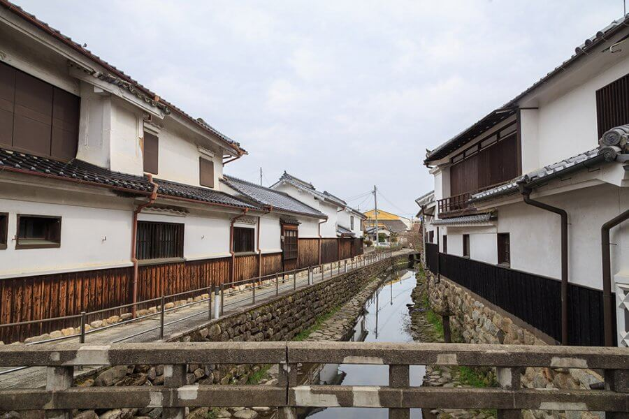

うきは市について
福岡県南東部に位置するうきは市は、東西に連なる耳納連山、雄大に流れる筑後川など、自然環境に恵まれています。
フルーツ王国うきは
山の麓には果樹園が広がり、年間通して果物を収穫できる、〝フルーツ王国〟です。８月には「フルーツ王国うきは開国式」が開催され、ぶどう、梨、ブルーベリー試食会、フルーツ狩り体験などが楽しめます。
白壁のまち並み
うきはの中心部、筑後吉井は江戸時代に久留米有馬藩と日田天領を結ぶ宿場町として栄えました。歴史ある白壁の町並みにはカフェ、雑貨屋などが並び、散策におすすめです。